El ego de creer que estamos solos
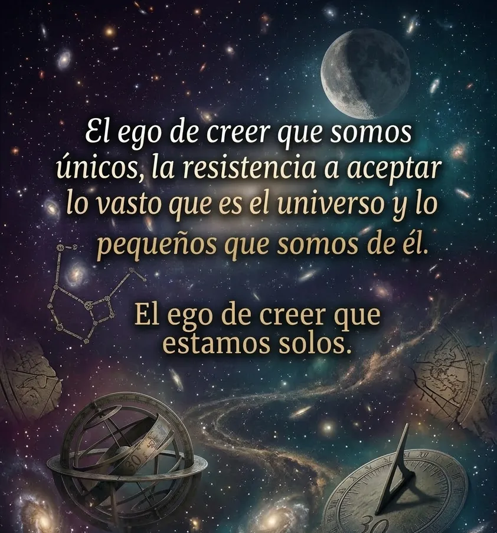
Pensar que la humanidad es la única forma de vida evolucionada en todo lo que existe puede parecer una idea cómoda, pero también revela algo más profundo: nuestro propio ego. El universo es inmenso, tan inmenso que incluso nuestras mejores herramientas científicas apenas han comenzado a explorarlo. Sabemos que existen miles de millones de galaxias, y dentro de cada galaxia hay miles de millones de estrellas. Muchas de esas estrellas tienen planetas. Solo ese pensamiento ya hace que nuestro planeta, nuestra especie y nuestra historia parezcan diminutos en comparación con la inmensidad que nos rodea.
Aun así, muchas personas siguen creyendo con total seguridad que la vida inteligente solo existe aquí, en la Tierra. No porque tengan pruebas definitivas, sino porque la idea de no ser especiales resulta incómoda. Pero si realmente observamos el panorama completo, esa seguridad empieza a verse más como una expresión de orgullo humano que como una conclusión lógica.
Imaginar que somos los únicos seres capaces de pensar, crear, construir civilizaciones o reflexionar sobre nuestra propia existencia dentro de un universo posiblemente infinito es, en cierto modo, colocarnos en el centro de todo. Y la historia nos ha enseñado que cada vez que la humanidad se creyó el centro del universo, terminó descubriendo que no lo era. Primero pensamos que la Tierra era el centro de todo. Luego descubrimos que orbitamos una estrella común. Después entendimos que nuestra estrella es solo una más entre miles de millones dentro de una galaxia que tampoco tiene nada de especial.
Si seguimos ese patrón, resulta razonable preguntarse si también estamos equivocados al pensar que la inteligencia es algo exclusivo de nuestro planeta. Tal vez haya civilizaciones que surgieron mucho antes que la nuestra, o quizás otras que apenas están comenzando su historia en algún rincón lejano del cosmos. Tal vez algunas ya desaparecieron. Tal vez otras existen ahora mismo, mirando su propio cielo y preguntándose exactamente lo mismo que nosotros.
No creer en la posibilidad de vida extraterrestre evolucionada no siempre es un problema de falta de pruebas. A veces es simplemente una resistencia a aceptar lo vasto que realmente es el universo y lo pequeños que somos dentro de él. Y reconocer nuestra pequeñez no debería hacernos sentir menos importantes; al contrario, puede hacernos más humildes, más curiosos y más abiertos a lo desconocido.
Tal vez la verdadera grandeza de la humanidad no esté en creer que somos únicos, sino en atrevernos a aceptar que podríamos no serlo.
Cuando la realidad se siente extraña
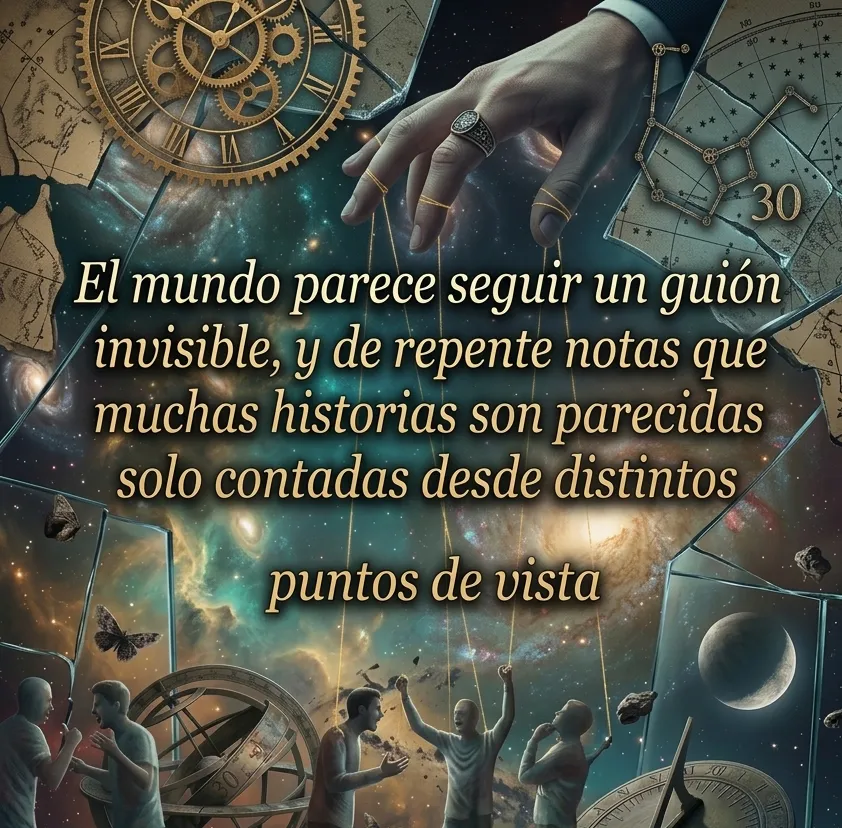
Hay momentos en los que todo parece raro. No necesariamente malo, solo… extraño. Como si por un instante te salieras de la rutina de la vida y miraras todo desde afuera. Caminas, hablas con personas, haces lo mismo de siempre, pero dentro de tu cabeza aparece una sensación difícil de explicar: nada se siente completamente real.
Es como si el mundo siguiera un guión invisible. Las conversaciones parecen repetirse, las personas parecen encajar en ciertos papeles, y de repente notas que muchas historias son parecidas entre sí, solo contadas desde distintos puntos de vista. El amigo que tuvo problemas con su familia, alguien que persigue un sueño, otro que intenta encontrar su lugar en el mundo. Diferentes nombres, diferentes caras, pero las mismas emociones repitiéndose una y otra vez.
En esos momentos empiezan a aparecer preguntas incómodas. ¿Para qué nos esforzamos tanto? ¿Por qué corremos detrás de metas, dinero, éxito o reconocimiento, si al final nuestro planeta es apenas un punto microscópico dentro de un universo gigantesco? Cuando piensas en la escala del cosmos, todo lo humano parece diminuto. Nuestros problemas, nuestras discusiones, incluso nuestras mayores ambiciones parecen pequeñas frente a la inmensidad que existe ahí afuera.
Y esa sensación puede ser inquietante. Por un momento parece que la realidad pierde peso, como si todo fuera una especie de escenario donde cada persona interpreta su papel sin cuestionarlo demasiado. Te preguntas si lo que llamamos “realidad” es realmente tan sólida como creemos, o si simplemente es una historia que todos aceptamos para poder seguir adelante.
Pero quizás esa sensación no sea algo negativo. Tal vez esos momentos en los que todo parece extraño son los mismos momentos en los que empezamos a pensar de verdad. Cuando dejamos de movernos en piloto automático y empezamos a observar el mundo con curiosidad, con duda, con una especie de distancia que nos permite verlo de otra forma.
Porque aunque nuestro planeta sea pequeño, y aunque nuestra existencia sea breve comparada con la edad del universo, seguimos teniendo algo curioso: la capacidad de preguntarnos por qué estamos aquí. Tal vez no tengamos todas las respuestas, y tal vez nunca las tengamos. Pero el simple hecho de poder hacernos esas preguntas ya convierte nuestra pequeña experiencia en algo bastante extraordinario.
¿Y si nuestro mundo no es la base de la realidad?
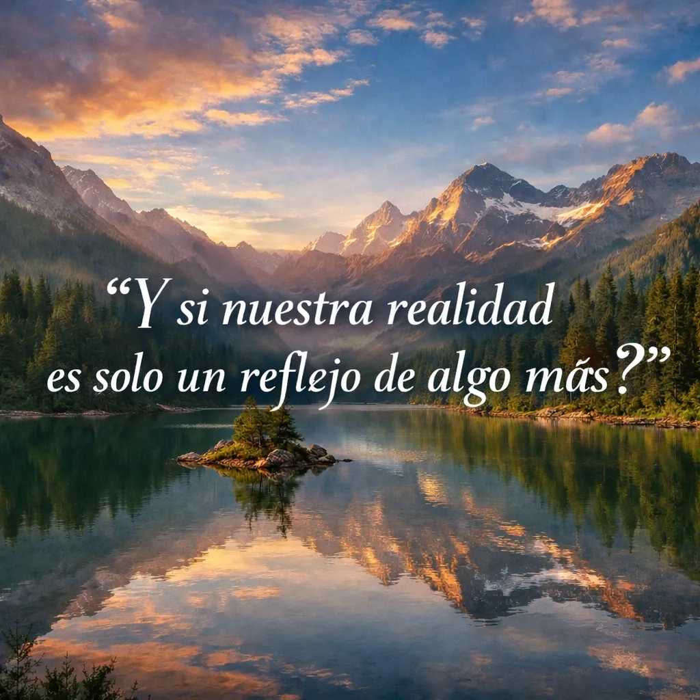
A veces aparece una pregunta extraña en la cabeza, una de esas que no puedes comprobar pero tampoco puedes ignorar del todo: ¿y si nuestro mundo no es la base de la realidad?
Todo lo que conocemos —las ciudades, el cielo, las personas, los recuerdos, la historia— podría ser exactamente lo que creemos que es. Un universo real, enorme, con sus propias leyes físicas y su propio origen. Pero también existe la posibilidad, aunque sea pequeña, de que todo esto sea algo más… una capa encima de otra realidad más profunda.
Piensa en algo simple: nosotros ya estamos empezando a crear mundos simulados. Videojuegos cada vez más realistas, inteligencias artificiales que hablan, entornos digitales donde millones de personas interactúan como si estuvieran en un lugar real. Hace apenas unas décadas eso parecía imposible, y sin embargo ahora es algo cotidiano.
Si una civilización continúa avanzando durante miles o millones de años, su tecnología podría ser tan avanzada que crear universos simulados completos no sería algo extraño. Mundos con sus propias reglas, sus propias historias y seres conscientes que creen vivir en una realidad auténtica.
Y entonces aparece la pregunta inquietante.
Si es posible crear una simulación de un universo… ¿cómo sabemos que no estamos dentro de una?
Tal vez nuestra realidad sea la original. Pero también podría ser una copia, o una simulación dentro de otra simulación, creada por alguna civilización muchísimo más avanzada que nosotros. Y si ese fuera el caso, probablemente ni siquiera existiría una forma clara de comprobarlo.
Lo curioso es que esta idea no cambia mucho lo que sentimos día a día. El sol seguiría saliendo, las personas seguirían teniendo conversaciones, seguiríamos intentando entender el mundo y nuestro lugar dentro de él. La experiencia de vivir seguiría siendo exactamente la misma.
Pero pensar en esa posibilidad cambia algo en la forma en la que miramos la realidad. Hace que el mundo parezca más misterioso. Hace que recordemos que, incluso con toda la ciencia y el conocimiento que tenemos, todavía sabemos muy poco sobre lo que realmente es la existencia.
Tal vez el universo sea exactamente lo que parece. O tal vez sea solo una capa dentro de algo mucho más grande.
Y lo más extraño de todo es que, si algún día descubrimos la respuesta, probablemente aparecerá una nueva pregunta todavía más profunda detrás de ella.
La ilusión de entender el mundo
Hay algo curioso en cómo los seres humanos vivimos nuestra vida diaria: actuamos como si entendiéramos perfectamente el mundo.
Nos despertamos, hacemos planes, discutimos sobre el futuro, tenemos opiniones firmes sobre cómo funcionan las cosas. Hablamos del universo, del tiempo, de la mente, de la realidad… como si realmente supiéramos qué está pasando.
Pero si te detienes a pensarlo un poco más profundo, empiezas a notar algo extraño: en realidad entendemos muy poco.
Sabemos que el universo existe, pero no sabemos por qué existe. Sabemos que hubo algo llamado inicio del universo, pero no sabemos qué había antes. Sabemos que la conciencia existe porque la experimentamos, pero nadie ha podido explicar completamente qué es o por qué aparece dentro de un cerebro.
Incluso cosas que parecen simples se vuelven misteriosas cuando las miras demasiado tiempo. ¿Qué es realmente el tiempo? No podemos tocarlo, no podemos verlo, pero organiza toda nuestra existencia. Todo lo que vivimos ocurre dentro de él, y aun así no podemos detenerlo, ni retrocederlo, ni salir de él.
Y luego está la realidad misma.
Damos por hecho que lo que vemos es el mundo tal como es. Pero nuestros ojos solo captan una pequeña parte de la luz que existe. Nuestros oídos solo perciben ciertas frecuencias. Nuestro cerebro interpreta señales eléctricas y construye una imagen del mundo dentro de nuestra mente.
En otras palabras, nunca vemos la realidad directamente. Solo vemos la versión que nuestro cerebro es capaz de construir.
Tal vez el universo sea muchísimo más extraño de lo que podemos imaginar. Tal vez existan cosas que nuestros sentidos simplemente no pueden percibir, o niveles de realidad que nuestra mente no está preparada para entender.
Y aun así seguimos viviendo, tomando decisiones, creando historias, construyendo civilizaciones… todo dentro de un misterio gigantesco que apenas comenzamos a explorar.
Quizás la parte más interesante de ser humano no es entender el universo.
Quizás es darnos cuenta de que estamos viviendo dentro de algo que probablemente siempre será mucho más grande de lo que podemos comprender.
El miedo a pensar demasiado
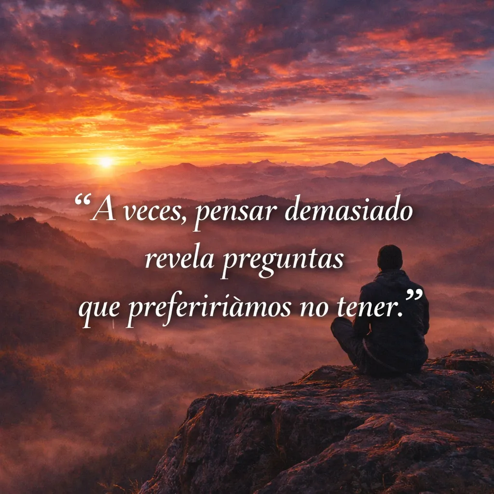
Existe una frase que muchas personas dicen cuando alguien comienza a cuestionar demasiado las cosas: “estás pensando demasiado”. Como si pensar más de lo necesario fuera algo peligroso, como si cruzar cierto límite de reflexión pudiera romper algo dentro de nosotros.
Y en cierto sentido, ese miedo tiene una razón.
Pensar demasiado puede llevarte a lugares incómodos. Cuando empiezas a cuestionar el mundo, las respuestas simples dejan de funcionar. Las cosas que antes parecían obvias comienzan a llenarse de dudas. Empiezas a preguntarte por qué vivimos como vivimos, por qué seguimos ciertas reglas, por qué creemos ciertas ideas sin haberlas cuestionado nunca.
De repente te das cuenta de que muchas cosas que damos por hechas simplemente existen porque siempre han estado ahí. Tradiciones, costumbres, metas de vida, incluso la forma en que entendemos el éxito o la felicidad. Pensar demasiado puede hacer que todo eso empiece a parecer… construido.
Y cuando algo parece construido, también parece frágil.
Tal vez por eso muchas personas evitan pensar demasiado. No porque no puedan hacerlo, sino porque hacerlo abre preguntas que no siempre tienen respuestas claras. Es más fácil seguir adelante sin detenerse demasiado en lo que hay detrás de todo.
Pero al mismo tiempo, pensar profundamente también es una de las cosas más humanas que existen. Es lo que nos permitió descubrir el universo, cuestionar ideas antiguas y cambiar la forma en que entendemos la realidad.
El problema no es pensar demasiado.
El problema es que, cuando piensas lo suficiente, empiezas a ver cosas que antes no veías. Empiezas a notar lo extraño que es existir, lo complejo que es el mundo y lo poco que realmente entendemos de él.
Y una vez que ves eso… ya no es tan fácil volver a mirar la realidad de la misma forma.
¿Y si el pasado no existe realmente?
Cuando pensamos en el pasado, lo imaginamos como algo sólido. Algo que ocurrió, que quedó atrás y que forma parte de la historia del mundo. Creemos que está ahí, fijo, como páginas escritas en un libro que ya no se puede cambiar.
Pero si lo piensas con calma, el pasado tiene algo extraño.
El pasado no está en ninguna parte.
No podemos ir a verlo, no podemos tocarlo, no podemos observarlo directamente. Todo lo que sabemos del pasado existe únicamente en dos lugares: en recuerdos dentro de nuestras mentes y en rastros que quedaron en el mundo, como fotografías, textos o huellas físicas de cosas que ocurrieron.
Pero incluso esas cosas existen en el presente.
Cuando recuerdas algo que te pasó hace años, no estás viajando al pasado. Tu cerebro está reconstruyendo ese momento ahora mismo, en el presente. Es como si tu mente estuviera recreando una escena basada en información que guardó.
Y lo más curioso es que los recuerdos no son perfectos. Cambian con el tiempo, se mezclan, se olvidan partes y se reinterpretan otras. Dos personas pueden recordar el mismo momento de formas completamente distintas.
Entonces aparece una pregunta extraña.
Si el pasado solo existe como recuerdos y rastros en el presente… ¿realmente existe como algo separado?
Tal vez el pasado no sea un lugar al que las cosas “van” después de ocurrir. Tal vez sea simplemente información que permanece en el presente de diferentes maneras: en la memoria, en los objetos, en las consecuencias que dejaron los eventos.
De alguna forma, todo lo que ocurrió sigue influyendo en lo que pasa ahora, pero no porque el pasado siga existiendo como un lugar, sino porque sus efectos siguen presentes.
Y eso lleva a otra idea curiosa.
Quizás la única parte del tiempo que realmente existe sea el ahora. El presente en el que estás leyendo estas palabras. El único momento en el que puedes pensar, sentir, decidir y experimentar algo.
El pasado vive en recuerdos.
El futuro vive en imaginación.
Pero la vida, la experiencia real de existir, siempre ocurre en un solo lugar.
Aquí. Ahora.
Tu cerebro nunca ha visto el mundo real
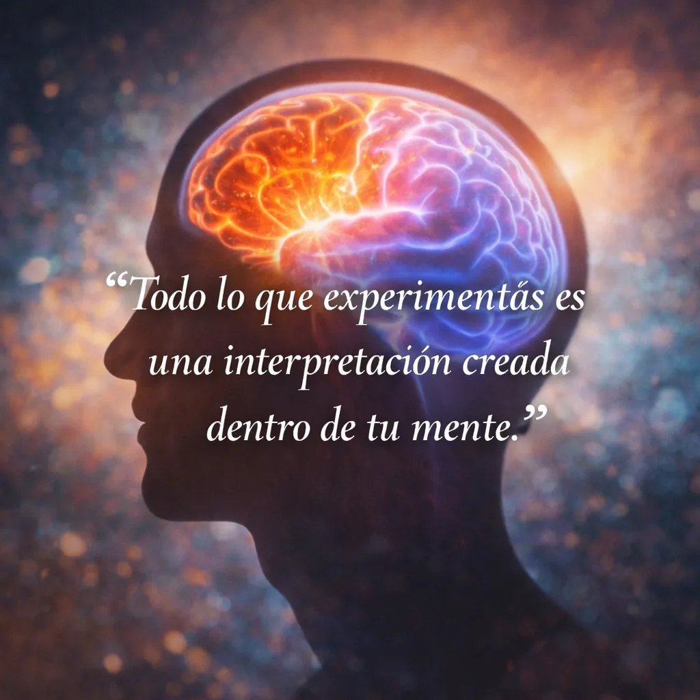
Puede sonar extraño, pero tu cerebro nunca ha visto el mundo real.
De hecho, tu cerebro nunca ha visto nada.
Todo lo que experimentas —colores, sonidos, olores, texturas, incluso el sabor de la comida— no es el mundo directamente. Es una interpretación que tu cerebro construye a partir de señales.
Tus ojos, por ejemplo, no “ven” objetos. Solo detectan luz. Diferentes longitudes de onda de luz entran en tus ojos y son convertidas en señales eléctricas que viajan por los nervios hasta tu cerebro.
Y ahí ocurre algo increíble.
Tu cerebro toma esas señales y construye una imagen del mundo. Los colores que ves, como el rojo o el azul, no existen como tales en la realidad externa; son una forma en que tu cerebro interpreta ciertas frecuencias de luz.
Lo mismo pasa con los sonidos. El aire vibra, tus oídos detectan esas vibraciones y las convierten en impulsos eléctricos. Luego tu cerebro los interpreta como música, voces o ruido.
En otras palabras, el mundo que experimentas no es el mundo directamente. Es un modelo que tu cerebro crea constantemente para ayudarte a interactuar con lo que te rodea.
Y lo más curioso es que ese modelo funciona tan bien que casi nunca lo cuestionamos.
Caminamos por las calles, hablamos con otras personas, miramos el cielo o el mar, y sentimos que estamos viendo la realidad tal como es. Pero en realidad estamos viendo una versión procesada, una representación creada dentro de nuestra mente.
Tal vez la realidad sea mucho más extraña de lo que podemos imaginar. Tal vez existan cosas que nuestros sentidos no pueden percibir, colores que nuestros ojos no pueden ver o sonidos que nuestros oídos no pueden escuchar.
Nuestro cerebro hace un trabajo increíble construyendo el mundo que experimentamos.
Pero ese mundo… siempre ocurre dentro de nuestra mente.
Quizás el universo ni siquiera tenga un propósito
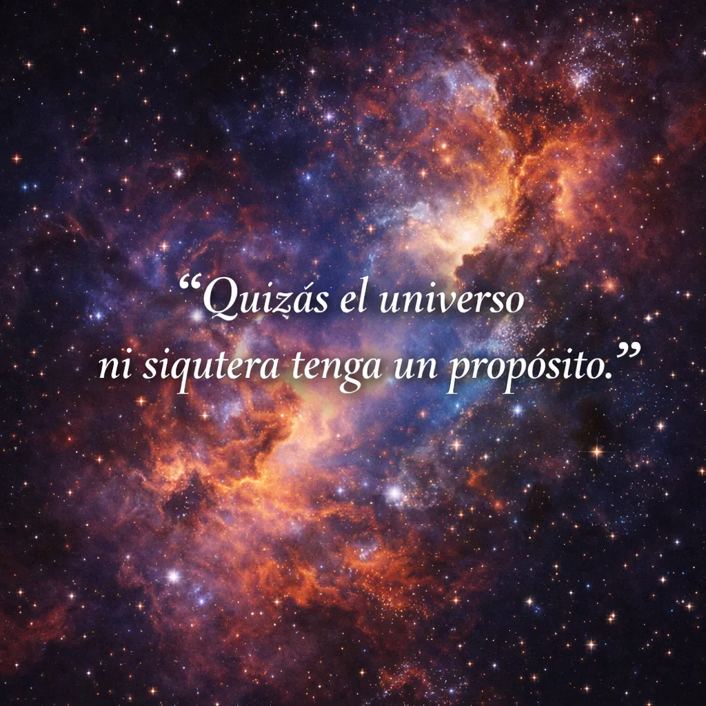
A los seres humanos nos gusta pensar que todo tiene un propósito.
Pensamos que los eventos ocurren por una razón, que las cosas pasan porque tienen que pasar, que de alguna forma el universo sigue una especie de plan. Es una idea reconfortante. Hace que la realidad parezca más ordenada, más comprensible.
Pero existe una posibilidad que a veces evitamos considerar.
Tal vez el universo no tiene ningún propósito.
El universo podría existir simplemente porque sí. Sin un objetivo final, sin una meta, sin una historia que esté tratando de contar. Solo un conjunto enorme de leyes físicas que, por alguna razón, permiten que la materia exista, que las estrellas se formen, que los planetas aparezcan y que, en algún lugar, la vida surja.
En ese escenario, nosotros no fuimos “planeados”. No éramos un destino inevitable del cosmos. Seríamos simplemente el resultado de una cadena inmensa de coincidencias que ocurrieron durante miles de millones de años.
Al principio, esa idea puede parecer un poco inquietante.
Si el universo no tiene un propósito… entonces tampoco hay un propósito universal escrito para nosotros. No hay una misión obligatoria que debamos cumplir ni un destino que esté esperando al final del camino.
Pero curiosamente, esa misma idea también puede verse de otra manera.
Si el universo no tiene un propósito impuesto, entonces significa que nosotros somos libres de crear el nuestro.
Podemos decidir qué cosas tienen valor, qué metas perseguir, qué tipo de vida queremos construir. El significado no estaría escrito en el universo, sino que aparecería en las decisiones que tomamos, en las cosas que elegimos hacer con el tiempo que tenemos.
Tal vez el universo no tenga un propósito.
Pero eso no significa que nuestra vida no pueda tener uno.
La posibilidad de que ya hayamos vivido esta vida antes
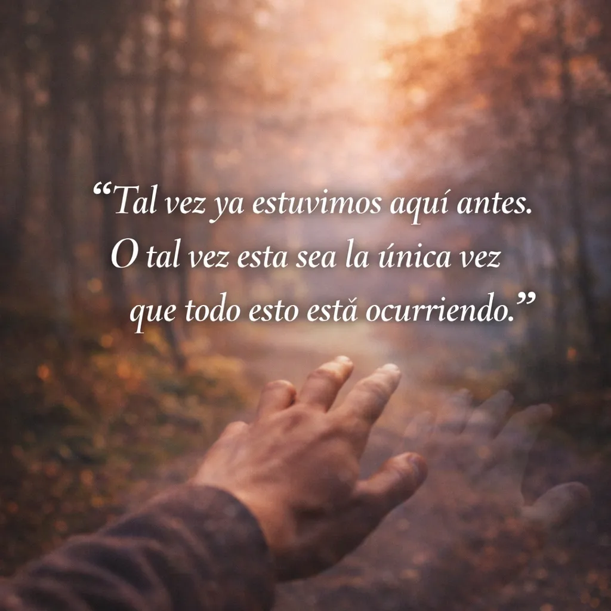
A veces ocurre algo extraño.
Estás viviendo un momento completamente normal: caminando por una calle, escuchando a alguien hablar, mirando un lugar que acabas de conocer… y de repente aparece una sensación rara.
Como si ya hubieras vivido exactamente ese momento antes.
No solo algo parecido. Exactamente el mismo instante.
La misma conversación.
El mismo lugar.
La misma sensación.
A esa experiencia muchos la llaman déjà vu. Y aunque suele durar apenas unos segundos, deja una pregunta curiosa flotando en la mente:
¿y si esto ya pasó antes?
Existe una idea que aparece en algunas filosofías y teorías sobre el tiempo. La posibilidad de que la vida no sea una línea que ocurre una sola vez, sino algo que de alguna forma se repite.
Quizás el universo pasa por ciclos enormes, tan largos que son imposibles de imaginar. Y tal vez, en alguno de esos ciclos, todo vuelve a ocurrir otra vez.
Las mismas estrellas.
Los mismos planetas.
Las mismas personas.
Incluso las mismas decisiones.
Si eso fuera cierto, podría significar que en algún momento ya vivimos esta misma vida. Con los mismos momentos buenos, los mismos errores, las mismas preguntas sin responder.
Pero también existe otra posibilidad más interesante.
Tal vez esas sensaciones extrañas no significan que el pasado se repite… sino que nuestro cerebro está intentando reconocer patrones todo el tiempo. Quizás el déjà vu sea simplemente una pequeña confusión en la memoria, un instante en el que la mente mezcla el presente con algo que ya vio antes.
Aun así, la idea sigue siendo intrigante.
Porque si existiera la mínima posibilidad de que la vida se repita, significaría que cada decisión que tomamos podría ser parte de una historia que ha ocurrido muchas veces… o que tal vez está ocurriendo por primera vez.
Y eso convierte incluso los momentos más pequeños en algo curioso.
Tal vez ya estuvimos aquí antes.
O tal vez esta sea la única vez que todo esto está ocurriendo.
¿Y si el tiempo no fluye como creemos?
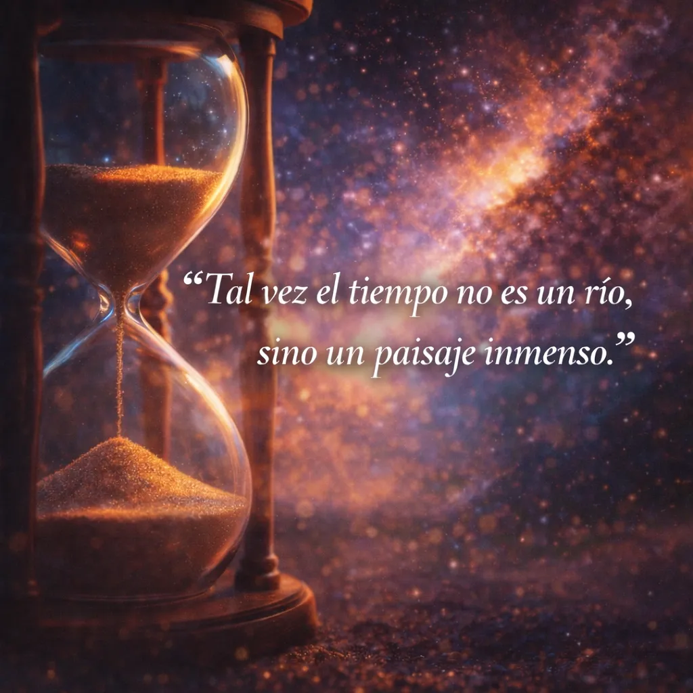
Desde pequeños aprendemos a imaginar el tiempo como algo simple.
Una línea que avanza constantemente: pasado, presente y futuro. Algo que siempre se mueve hacia adelante, segundo tras segundo, minuto tras minuto. Nunca se detiene, nunca retrocede.
Pero hay algo curioso.
Esa idea del tiempo que “fluye” podría ser solo la forma en que nuestra mente interpreta la realidad.
La física moderna sugiere algo bastante extraño: en algunas teorías, el pasado, el presente y el futuro podrían existir al mismo tiempo. No como una línea que avanza, sino como un enorme bloque donde todos los momentos ya están allí.
Si eso fuera cierto, el tiempo no estaría pasando realmente.
Sería más como si nosotros estuviéramos moviéndonos a través de él.
Imagina un libro enorme. Todas las páginas del libro ya existen: la primera, la última y todas las que están en medio. Pero cuando lo lees, solo puedes ver una página a la vez. Para ti la historia parece avanzar, aunque en realidad todas las páginas siempre estuvieron allí.
Tal vez algo parecido ocurre con el tiempo.
Tal vez el futuro ya existe de alguna forma, pero aún no lo hemos “leído”. Tal vez el pasado no desapareció realmente, sino que sigue existiendo como una página anterior del mismo libro.
Y nosotros simplemente estamos pasando por cada momento uno por uno.
Si esa idea fuera cierta, significaría que el universo es mucho más extraño de lo que imaginamos. Que el tiempo no es un río que fluye, sino un paisaje enorme por el que nuestra conciencia viaja lentamente.
Pero entonces aparece otra pregunta aún más inquietante.
Si el tiempo no fluye realmente…
¿qué es lo que nos hace sentir que sí lo hace?
¿Y si tus recuerdos no son tan reales como crees?
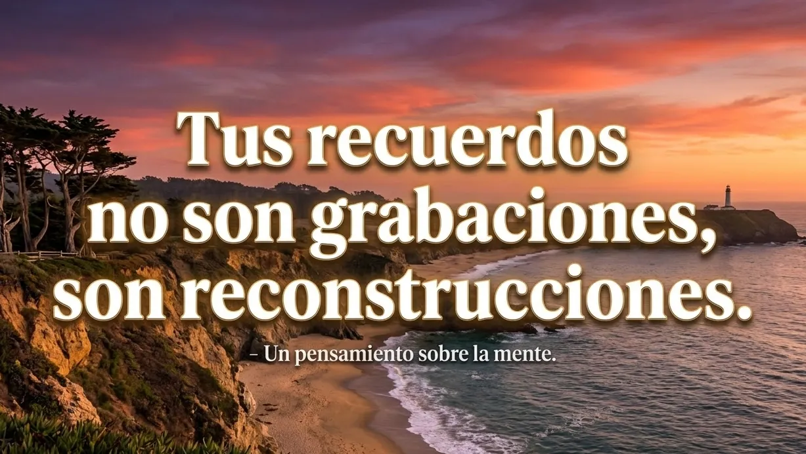
Confiamos mucho en nuestros recuerdos.
Pensamos en ellos como pequeñas grabaciones guardadas dentro de nuestra mente. Momentos del pasado almacenados exactamente como ocurrieron, esperando a que los volvamos a recordar.
Pero la realidad podría ser mucho más extraña.
Tu cerebro no guarda recuerdos como si fueran videos.
En realidad, cada vez que recuerdas algo, tu mente lo reconstruye. Toma fragmentos: imágenes, emociones, sonidos, sensaciones… y los vuelve a armar para crear una historia que tenga sentido.
Es decir, cada recuerdo que tienes podría ser una especie de reconstrucción.
Y como cualquier reconstrucción, puede cambiar.
Pequeños detalles pueden desaparecer con el tiempo. Otros pueden alterarse sin que te des cuenta. Incluso es posible que tu cerebro añada cosas que nunca ocurrieron realmente, simplemente porque encajan bien con la historia.
Eso significa que el pasado que recuerdas podría no ser exactamente el pasado que ocurrió.
Podría ser una versión editada.
No necesariamente falsa… pero tampoco perfecta.
Aun así, eso no significa que los recuerdos no tengan valor. De hecho, quizás lo más importante de ellos no sea la precisión, sino el significado que les damos.
Tal vez los recuerdos no existen para guardar el pasado tal como fue.
Tal vez existen para ayudarnos a entender quiénes somos ahora.
Tu mente vive unos milisegundos en el pasado
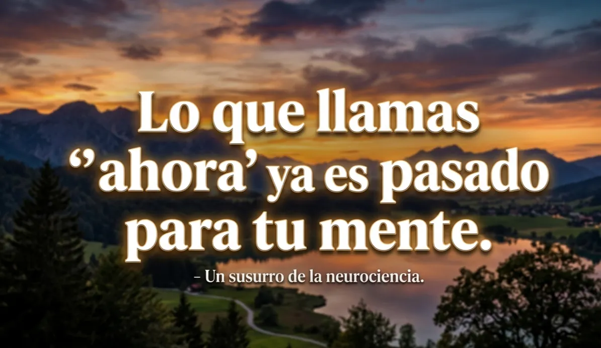
Puede parecer extraño, pero hay una posibilidad curiosa sobre la forma en que percibimos la realidad.
Tu mente podría estar viendo el mundo ligeramente en el pasado.
Todo lo que ocurre a tu alrededor necesita tiempo para llegar a tu cerebro. La luz viaja hasta tus ojos, los sonidos llegan a tus oídos, las señales nerviosas recorren tu cuerpo hasta que finalmente tu cerebro las procesa.
Ese proceso ocurre increíblemente rápido… pero no es instantáneo.
Entre el momento en que algo sucede y el momento en que tu cerebro lo percibe, pasan unos pequeños milisegundos.
Eso significa que lo que llamamos “presente” podría no ser exactamente el presente real.
Podría ser una versión muy reciente del pasado.
Es como si tu mente estuviera siempre viendo el mundo con un pequeño retraso invisible.
Pero aquí aparece algo aún más interesante.
Tu cerebro intenta compensar ese retraso. Constantemente está prediciendo lo que va a ocurrir, completando información antes de recibirla por completo.
En cierto sentido, tu mente no solo observa la realidad…
También intenta adelantarse a ella.
Y eso hace que la experiencia de existir sea mucho más extraña de lo que parece.
Porque el presente que sientes ahora mismo podría ser una mezcla curiosa entre un pequeño fragmento del pasado y una predicción del futuro.
Cuando alguien deja de existir pero su lugar sigue ahí
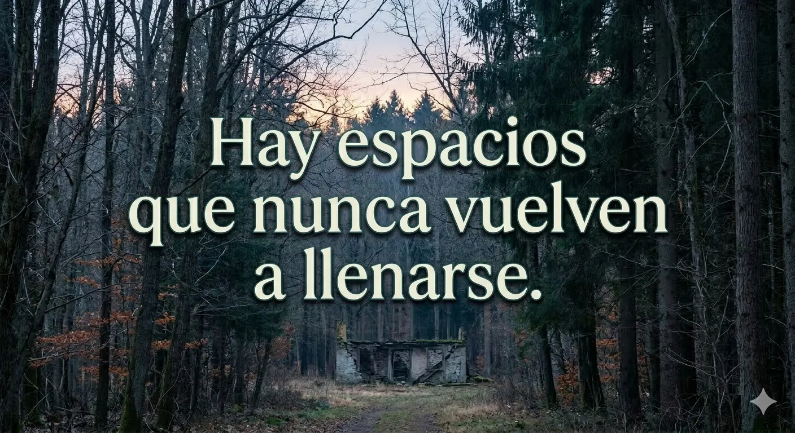
Hay algo extraño en la forma en que el mundo continúa después de que alguien ya no está.
Todo sigue funcionando igual. Las calles siguen llenas de gente, el sol sigue saliendo cada mañana, las conversaciones continúan, las rutinas no se detienen.
Pero para ti, algo cambió.
Porque hay lugares que ahora se sienten diferentes.
Una silla que antes siempre estaba ocupada.
Una habitación que ahora está demasiado silenciosa.
Un número de teléfono que todavía existe… pero que ya nadie contestará.
Es raro cómo una persona puede desaparecer del mundo, pero dejar tantas cosas atrás.
Su risa en algún recuerdo.
Su voz guardada en un viejo mensaje.
Las pequeñas costumbres que ahora parecen enormes porque ya no están.
Y lo más extraño es que su lugar sigue ahí.
La mesa donde se sentaba.
El camino que solía recorrer.
Las cosas que tocó, los lugares donde estuvo.
Todo permanece igual… excepto la persona.
A veces pensamos que perder a alguien significa que desaparece por completo. Pero no es tan simple. Porque aunque ya no estén físicamente, siguen existiendo de otra forma.
En recuerdos.
En historias.
En pequeños detalles que aparecen cuando menos lo esperas.
Tal vez perder a alguien no significa que deje de existir por completo.
Tal vez significa que su presencia cambia de lugar.
De estar en el mundo…
a vivir dentro de quienes lo recuerdan.
Las personas que cambiaron tanto que parecen extraños ahora
Hay algo extraño que pasa con el tiempo: no solo cambia los lugares o las circunstancias, también cambia a las personas. A veces de formas tan silenciosas que ni siquiera lo notas mientras ocurre.
Un día miras a alguien que conociste durante años —alguien con quien compartiste conversaciones, bromas, momentos importantes— y de repente sientes algo raro. No es que no lo reconozcas físicamente. Es otra cosa. Es como si la persona que conocías ya no estuviera ahí.
Sigue teniendo el mismo nombre, la misma cara, la misma historia… pero algo en su forma de hablar, de pensar o de ver el mundo se siente completamente diferente.
Y entonces aparece una sensación difícil de explicar: la de estar frente a un extraño que, en algún momento del pasado, fue alguien muy cercano.
Lo curioso es que el cambio casi nunca ocurre de golpe. No hay un momento exacto en el que alguien se transforma por completo. Es más bien una suma de pequeños cambios: nuevas experiencias, nuevas decisiones, nuevas ideas. Poco a poco, sin que nadie se dé cuenta, la persona que conocías empieza a desaparecer y otra comienza a ocupar su lugar.
A veces ese cambio es natural. Las personas crecen, aprenden cosas nuevas, atraviesan momentos que las transforman. La vida empuja a todos en distintas direcciones.
Pero lo que duele un poco es darse cuenta de que algunos vínculos no se rompen por peleas ni por decisiones claras. Simplemente se van desgastando porque las personas que los formaban ya no son las mismas.
Es como mirar una fotografía vieja. Reconoces a quienes están ahí, recuerdas lo que significaban para ti… pero sabes que esa versión de ellos ya no existe.
Quizás lo más extraño de todo es entender que esto también nos pasa a nosotros. Mientras pensamos en personas que cambiaron tanto que parecen extraños, probablemente alguien, en algún lugar, también esté pensando lo mismo de nosotros.
Porque el tiempo no solo transforma a los demás.
También nos transforma a nosotros, incluso cuando no lo notamos.
Cuando entiendes algo demasiado tarde
Hay cosas que no duelen cuando pasan.
Duelen después.
A veces pasan años, meses o incluso solo unos días… y de repente lo entiendes. Entiendes algo que antes estaba justo frente a ti, pero que tu mente no quiso ver, o simplemente no supo cómo entender.
Tal vez era una persona que te quería más de lo que pensabas.
Tal vez era un momento que no valoraste.
Tal vez era una despedida que parecía una más… hasta que te das cuenta de que en realidad fue la última.
Y lo peor de entender algo demasiado tarde es que, cuando finalmente lo comprendes, ya no hay nada que puedas hacer.
No puedes volver atrás para decir las palabras que faltaron.
No puedes repetir ese momento y vivirlo de otra forma.
No puedes regresar a ese día y prestar más atención.
El tiempo tiene algo cruel: nunca avisa cuando algo es la última vez.
La última conversación.
La última risa juntos.
La última vez que alguien esperaba que hicieras algo diferente.
Y mientras todo eso ocurría, tú pensabas que siempre habría más tiempo.
Más días.
Más oportunidades.
Más momentos para arreglar las cosas.
Pero el tiempo no funciona así.
A veces la vida sigue avanzando normalmente, como si nada hubiera pasado… hasta que un día un recuerdo vuelve a tu mente y entiendes algo que antes no entendías.
Y en ese momento aparece una sensación extraña, una mezcla de tristeza, nostalgia y arrepentimiento. Como si una parte de tu mente quisiera volver atrás solo para hacer una cosa diferente.
Pero no se puede.
Lo único que queda es el recuerdo… y la versión de ti que habría actuado distinto si hubiera entendido todo un poco antes.
Quizás por eso algunas de las lecciones más importantes de la vida siempre llegan tarde. No porque el mundo sea cruel, sino porque aprender a ver las cosas como realmente son a veces requiere tiempo.
El problema es que, cuando finalmente aprendemos a verlas…
algunas personas, algunos momentos, y algunas oportunidades ya se han ido para siempre.
Las versiones de ti que nunca llegaste a ser
Hay una parte de la vida de la que casi nadie habla.
No es el pasado que recuerdas, ni el presente que estás viviendo…
son todas las versiones de ti que nunca llegaron a existir.
Cada decisión que tomaste cerró miles de caminos que nunca recorriste.
Cada vez que dijiste “sí”, hubo un “no” en algún lugar que cambió completamente la historia que pudo haber sido tu vida.
Existe una versión de ti que siguió ese sueño que dejaste.
Otra que habló cuando decidió quedarse callado.
Otra que nunca se rindió cuando tú sí lo hiciste.
Hay una versión de ti que vive en otra ciudad.
Otra que todavía habla con personas que hoy son solo recuerdos.
Otra que tomó ese riesgo que te dio miedo.
Pero ninguna de ellas existe.
Porque la vida no te deja vivir todas tus posibilidades.
Solo te deja elegir un camino… mientras los demás desaparecen lentamente.
Y lo extraño es que, a veces, puedes sentirlas.
Cuando escuchas una canción y te preguntas cómo sería tu vida si hubieras tomado otra decisión.
Cuando ves a alguien viviendo algo que tú soñabas.
Cuando recuerdas un momento en el que todo pudo haber cambiado… pero no cambió.
No es exactamente arrepentimiento.
Es más bien una sensación silenciosa, como si hubiera otras vidas posibles caminando muy cerca de la tuya, pero separadas por una decisión que ocurrió hace mucho tiempo.
Versiones de ti que rieron en lugares donde tú nunca estuviste.
Que amaron a personas que tú nunca conociste.
Que lograron cosas que tú dejaste atrás.
Y a veces duele pensar en eso.
No porque tu vida esté mal…
sino porque entiendes que dentro de ti existían miles de historias distintas, y la mayoría de ellas jamás tuvieron la oportunidad de existir.
Tal vez por eso algunos recuerdos se sienten tan pesados.
Porque no solo recuerdas lo que pasó…
también sientes, muy en el fondo, todo lo que pudo haber pasado y nunca pasó.
Y esas versiones de ti, las que nunca llegaron a ser…
probablemente desaparecieron sin que nadie, excepto tú, supiera que alguna vez pudieron existir.
Todos los caminos llevan a Roma
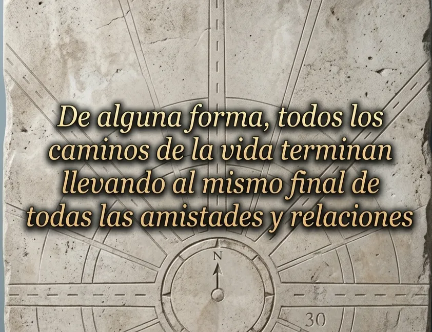
Existe una frase muy antigua que dice que todos los caminos llevan a Roma.
Durante siglos se usó de forma literal, porque en el Imperio Romano las carreteras estaban diseñadas para conectar todo con una misma ciudad. Sin importar por dónde empezaras el viaje, tarde o temprano el camino terminaba allí.
Pero a veces esa frase parece describir algo más profundo sobre la vida.
Porque, de alguna forma, todos los caminos también llevan al mismo final.
No importa cuánto dure una amistad, cuánto ames a alguien o cuánto intentes mantener ciertos momentos intactos. Todo cambia con el tiempo. Las personas crecen, se transforman, toman decisiones distintas, siguen rutas que ya no coinciden con las tuyas.
Al principio parece imposible pensar que algo que se siente tan fuerte pueda terminar.
Una amistad que parecía eterna.
Una relación que creías que duraría toda la vida.
Personas con las que imaginabas años y años de recuerdos.
Pero el tiempo es como un camino que nunca se detiene.
Y mientras avanzas, algunas personas caminan contigo durante kilómetros. Comparten conversaciones, risas, silencios, momentos que parecen tan importantes que sientes que nunca desaparecerán.
Hasta que un día el camino se divide.
A veces la separación es lenta. Los mensajes se vuelven menos frecuentes, las conversaciones más cortas, las visitas más raras. Poco a poco, sin darte cuenta, alguien que era parte de tu vida diaria se convierte en un recuerdo.
Otras veces ocurre de golpe.
Una despedida, una discusión, un cambio de vida. Y de repente alguien que conocía tus pensamientos más profundos pasa a ser solo otra persona en el mundo.
Y lo extraño es que el mundo sigue igual.
Las calles siguen ahí.
Los lugares siguen existiendo.
Las canciones que escuchaban juntos todavía suenan.
Pero algo cambió para siempre.
Quizás por eso la frase “todos los caminos llevan a Roma” puede sentirse un poco triste cuando la miras de otra forma.
Porque en la vida también parece haber un destino común para muchas cosas: el final.
No significa que lo que viviste no haya sido real.
No significa que esos momentos no hayan importado.
Significa que, igual que los caminos, las personas también tienen trayectorias que no siempre permanecen juntas.
Algunas caminan contigo solo un tramo.
Otras se quedan más tiempo.
Y unas pocas desaparecen antes de que estés listo para despedirte.
Pero todas, de una forma u otra, terminan tomando caminos diferentes.
Y tal vez lo más extraño de todo es que, incluso sabiendo eso, seguimos conociendo gente, seguimos creando vínculos, seguimos creyendo que esta vez podría ser diferente.
Quizás porque, aunque sepamos que muchos caminos terminan separándose…
mientras caminamos juntos, esos momentos siguen valiendo la pena.
Cuando entiendes que algunas historias no tienen final feliz
Desde pequeños nos enseñan algo muy simple: que las historias siempre terminan bien.
En los cuentos, en las películas, en casi todo lo que vemos crecer, siempre existe ese momento final en el que todo se arregla. Los problemas se resuelven, las personas correctas se quedan juntas y todo parece tener un sentido.
Pero la vida no siempre funciona así.
A veces una historia simplemente termina… y ya.
Sin una explicación clara.
Sin una despedida perfecta.
Sin ese momento final donde todo queda en paz.
Hay relaciones que terminan aunque todavía exista cariño.
Amistades que desaparecen aunque nadie haya querido que pasara.
Sueños que se quedan a medio camino sin que haya una razón concreta.
Y al principio cuesta aceptarlo.
Porque una parte de nosotros siempre espera que algo cambie. Que haya una última conversación que arregle todo, una coincidencia que vuelva a juntar los caminos, una oportunidad que permita terminar la historia de una forma distinta.
Pero a veces ese momento nunca llega.
La vida sigue avanzando, las personas cambian, el tiempo pasa… y de repente te das cuenta de que esa etapa ya terminó, incluso si tú todavía no estabas listo para que terminara.
Y eso duele.
Duele entender que algunas historias importantes en tu vida no van a tener un final bonito. No van a cerrar con una escena perfecta ni con palabras que lo expliquen todo.
Solo terminan.
Y lo único que queda son los recuerdos de lo que fue mientras existió.
Pero quizá ahí también hay algo extraño que vale la pena pensar.
Que una historia no tenga un final feliz no significa que no haya sido importante.
No significa que no haya tenido momentos reales, risas sinceras o recuerdos que todavía significan algo.
Significa simplemente que no todas las historias están hechas para durar para siempre.
Algunas existen solo por un tiempo.
Lo suficiente para cambiar algo dentro de ti, para enseñarte algo, o para dejar un recuerdo que va a quedarse contigo incluso cuando todo lo demás ya haya terminado.
Y tal vez crecer también significa eso.
Aceptar que algunas historias importantes de nuestra vida no tienen un final feliz…
pero aun así fueron parte de lo que nos convirtió en quienes somos hoy.
Las personas que pensábamos que iban a estar en nuestra vida para siempre
Cuando conoces a ciertas personas, nunca imaginas que algún día podrían desaparecer de tu vida.
No porque haya una razón lógica, sino porque simplemente se sienten… permanentes. Como si su lugar en tu historia estuviera asegurado para siempre.
Son las personas con las que compartiste momentos importantes. Conversaciones largas, risas sin sentido, secretos, planes para el futuro. Personas con las que imaginabas años y años de recuerdos todavía por vivir.
En ese momento, la idea de que algún día dejarían de formar parte de tu vida parecía imposible.
Pero el tiempo tiene una forma extraña de cambiar las cosas.
Las personas crecen, toman caminos distintos, cambian sus prioridades, conocen nuevas vidas. Y poco a poco, sin que nadie lo planee realmente, las distancias empiezan a aparecer.
Primero son pequeños cambios.
Hablan menos.
Se ven menos.
Las conversaciones ya no son tan largas como antes.
Y aunque todo parece normal en la superficie, en el fondo algo empieza a sentirse diferente.
Hasta que un día te das cuenta de algo que nunca imaginaste: esa persona que alguna vez fue parte importante de tu vida ahora es casi un extraño.
Siguen existiendo, siguen viviendo su vida, pero ya no forman parte de la tuya como antes.
Y lo más extraño es que muchas veces no hubo una gran pelea, ni un momento dramático que lo explicara todo.
Simplemente pasó.
La vida siguió avanzando y, en algún punto del camino, dejaron de caminar juntos.
A veces vuelves a pensar en ellos.
Recuerdas momentos específicos, conversaciones que parecían importantes, promesas que en ese momento sonaban sinceras. Y te preguntas en qué momento exactamente cambió todo.
Pero muchas veces no hay una respuesta clara.
Porque algunas personas no desaparecen de nuestra vida de golpe…
se van lentamente, casi sin hacer ruido.
Quizás por eso duele tanto recordarlas.
No porque hayan hecho algo malo, ni porque tú lo hayas hecho. Sino porque alguna vez fueron parte de tu mundo, y ahora solo existen en tus recuerdos.
Personas que en algún momento parecían destinadas a quedarse para siempre…
pero que terminaron siendo solo una parte del camino.
Cuando te acostumbras a estar solo
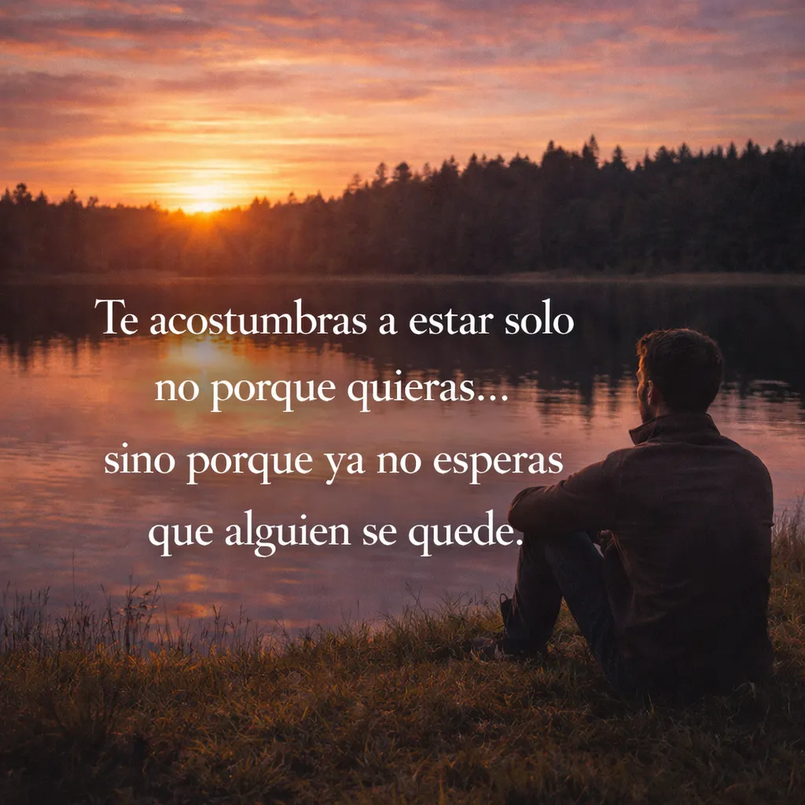
Hay un momento en la vida que casi nadie nota cuando ocurre.
No pasa de golpe.
No es algo dramático.
Simplemente llega poco a poco.
Es el momento en que empiezas a acostumbrarte a estar solo.
No porque lo hayas elegido realmente, sino porque después de un tiempo empiezas a entender algo: no siempre puedes esperar que alguien se quede.
Al principio duele.
Cuando alguien se va, cuando una amistad cambia, cuando una persona que parecía importante desaparece lentamente de tu vida. Al principio intentas entenderlo, intentas arreglarlo, intentas aferrarte a lo que alguna vez fue.
Pero el tiempo pasa.
Y después de suficientes despedidas, algo dentro de ti empieza a cambiar.
Empiezas a contar menos cosas.
A esperar menos respuestas.
A depender menos de la presencia de alguien más.
No porque ya no te importen las personas.
Sino porque aprendiste que muchas veces las personas no se quedan tanto tiempo como uno imaginaba.
Entonces empiezas a construir una vida más silenciosa.
Te acostumbras a pasar tiempo contigo mismo.
A resolver tus problemas solo.
A guardar ciertas cosas en tu mente en lugar de contarlas.
Y con el tiempo… deja de sentirse tan extraño.
Lo que antes era soledad empieza a sentirse como normalidad.
Pero a veces, en momentos muy específicos, aparece una sensación rara.
Cuando ves a otras personas compartir algo importante con alguien más.
Cuando escuchas a alguien decir “siempre voy a estar contigo”.
Cuando recuerdas cómo se sentía tener a alguien que realmente parecía quedarse.
Y en esos momentos te das cuenta de algo.
Que no es que quieras estar solo.
Simplemente aprendiste a no esperar demasiado de las personas.
Porque esperar duele más cuando alguien decide irse.
Así que poco a poco te acostumbras a caminar solo…
aunque en el fondo todavía exista una pequeña parte de ti que desearía que, por una vez, alguien decidiera quedarse.
Atrás
Siguiente